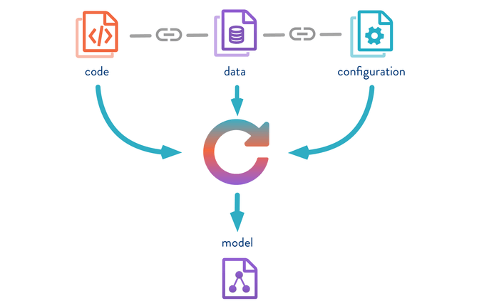
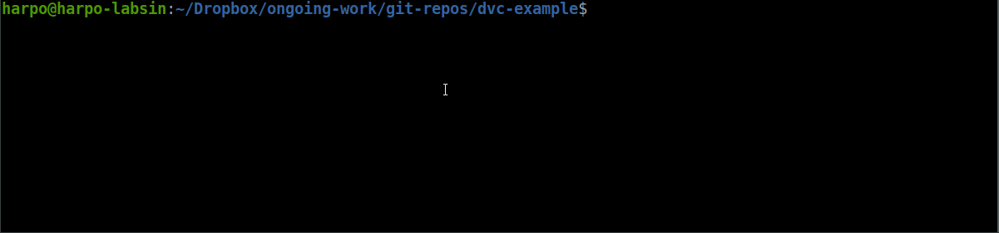

Using DVC pipelines with examples in R (stages)
The current post is the second part of a series of posts discussing the more relevant aspects of using DVC. See the first post here. The current post is centered around the R language since there are many other interesting (and probably better) posts using python 🤷.
Revisiting the general idea behind DVC
As I already mentioned in the first post of the series, one of the issues tackled by DVC is how to keep track of your whole machine learning pipeline. DVC aims to track the data, code, configuration parameters, and resulting models. As you can see from the picture below (gently stolen from DVC ), DVC creates references to all the resources (i.e. code, datasets, and models) involved in the current pipeline. So, with DVC you have a sort of snapshot of the code, datasets, configuration parameters, and models.
DVC helps with the tracking of large files inside git repositories including the data, code, configuration parameters, and models.

A workflow for migrating to DVC Pipelines
The following are just some notes about the process I personally use to migrate from notebooks to DVC. Nowadays, the first approach to tackling a problem is still notebook-based, but after a couple of hours in the project, I start migrating to DVC.
Use functions
Yes, I know it could be pretty obvious, but it is incredible to see how often you finish your experimental research with several notebooks and without one piece of code inside a function definition. Writing and thinking about functions should be the default when you are working on a data science project. ( Sure, you can go further with OOP and other fancy approaches, but for me at least, OOP provides too much overhead for a simple data science experimental setup 🤷. )
I recommend the R package approach: one function per file. (even if you are not using R). In general, the idea is to have a limited number of functions included in a file. The latter will simplify your life when following a Git Collaboration workflow.
Using functions provide you with versatility. You can refactor your notebook with functions and continue using it for performing fast analysis, EDAs, or whatever you want it to do. The same function can be included in a DVC script that is part of your Machine Learning pipeline. The same function can be included in your REST service using a plumber ( See my post about it).
In a previous post, I discussed a possible directory structure for keeping your experiment tidy. I will include it below for simplicity (Feel free to change whatever you want in this structure)

Figure 3: A possible directory structure of a git repository for machine learning research experiments
The code/ directory contains all the code for running the experiment. As you can see in the image below, inside the R/ directory there are other directories including the functions/. The same approach applies if you use Python but under the python/ directory ( Duh !! ). Inside this directory, you should include all the functions extracted from your notebooks. In the example below, I have created functions for feature selection, training models, and SHAP value analysis, among others.

Figure 4: An example of file distribution inside the code/ directory
Let’s define a simple function that selects the initial set of features for a given dataset. The function receives two parameters, the dataset and a list of the selected features.
library(dplyr)
#' select initial features based on disciplinary knowledge
#' @param dataset
#' @param initial_features
#' @return dataset with selected features
select_initial_features <- function(dataset, initial_features){
dataset$Anim <- as.factor(dataset$Anim)
dataset_numeric <- dataset %>%
select(all_of(initial_features))
dataset_numeric %>%
tibble::add_column(Activity=as.factor(dataset$Activity))
}Now, for using DVC, you need to transform this function into an executable script. Executable scripts are the base of the DVC pipelines. The file 020_select_features_initial_cmd.R located inside the scripts/ directory is the actual executable used by DVC. In a brief, the basic idea of the script is to read a dataset, a set of initial features, and invoke the select_initial_features() function defined above.
Executable scripts are the base of the DVC pipelines.
The code below is part of the 020_select_features_initial_cmd.R executable script. The idea is to run the script via Rscript or r frontend. As you can see, one of the first line of the script source the file containing the select_initial_features() function. Then, in the next lines, we use the optparse package for managing arguments for the scripts (If you never have used the package before, I highly recommend it. It is simple and does the job)
#!/bin/Rscript
# Select initial features
source("code/R/functions/select_features_initial.R")
suppressPackageStartupMessages(library(optparse))
suppressWarnings(
suppressPackageStartupMessages(library(yaml)))
option_list <- list(
make_option("--input",
action="store",
type="character",
help = "Set the name of the input data file in tsv format"),
make_option("--output",
action="store",
type="character",
default="",
help = "Set the name of the output data file in tsv format")
)
opt <- parse_args(OptionParser(option_list=option_list))
## Check for arguments
if (opt$input %>% is.null() ||
opt$output %>% is.null()){
message("[] Parameters missing.
Please use --help for look at available arguments")
quit()
}else{
# Read dataset
dataset <-
readr::read_delim(opt$input,
col_types = cols(),
delim = '\t')
## Select features
dataset <-
select_initial_features(dataset,
INITIAL_FEATURES)
## Save dataset
dir.create(dirname(opt$output),
showWarnings = FALSE)
readr::write_delim(dataset,
file = opt$output,
delim = '\t')
}In this case, I have defined only 2 arguments: --input and --output . The first argument refers to the original dataset (delimited with tabular), while the second refers to the resulting dataset with just the selected features included. The script has four sections: a) check for parameters, b) read dataset, c) select features, and d) save the resulting dataset.
You can, then, invoke the script from the project base directory as follows:
bash$ Rscript code/R/scripts/020_select_features_initial_cmd.R \
--input rawdata/preprocessed.tsv \
--output data/initial_features/preprocessed-initial-features.tsvNotice that the --output argument will create a initial_features/ directory under data/ thanks to the dir.create() function.
Creating stages
Following DVC nomenclature, a stage is a task part of a machine learning process. A machine learning pipeline is defined by several of these stages. If you look at Figure 2, you will find that several nodes of the graph correspond to DVC stages.
DVC uses a file named dvc.yaml for defining a machine learning pipeline. The dvc.yaml is a file in YAML format that defines different aspects such as results and dependencies of a machine learning project. I don’t want to reformulate the explanation behind dvc.yaml the file (you can check here for that), instead, I will start with an example.
So, let’s include the script inside the DVC dvc.yaml file. I will define a new stage named select_features_initial for executing the script.
stages:
select_features_initial:
cmd: Rscript code/R/scripts/020_select_features_initial_cmd.R
--input rawdata/preprocessed.tsv
--output data/initial_features/preprocessed-initial-features.tsv
deps:
- code/R/functions/select_features_initial.R
- code/R/scripts/020_select_features_initial_cmd.R
- rawdata/preprocessed.tsv
outs:
- data/initial_featuresThe cmd: node defines the script and arguments to be executed during the stage. A second node deps: is used for defining the dependencies of the stage. In this case, I have defined three dependencies: the input dataset, the function, and the script itself.
Finally, the outs: node indicates the directory location where the resulting dataset will be left.
But WAIT ! !, the INITIAL_FEATURES variable is undefined. We have not provided any definition for it. I will use this terrible mistake as an excuse to introduce DVC parameters.
Tracking parameters
The INITIAL_FEATURES variable should be defined somewhere. But ideally, you would like to execute an experiment with different initial variable sets. For that, DVC provides the params.yaml file. There you can define parameters associated with a particular stage and every time the parameters change, DVC will re-execute only the dependent stages.
For this particular example the params.yaml would like like this
select_initial:
features:
- Anim
- Standing
- Active
- Lying
- DFL1
- DFL2
- DFL3
- DFA12
- DFA123
- DBL1
- DBL2
- DBL3
- DBA12
- DBA123The first YAML node is the name associated with the select_features_initial stage. Notice that it is not necessary to match. You can pick whatever name you want. Then, the node features is a collection with the names of the selected features.
Unfortunately, manipulating the information provided inside params.yaml is your responsibility. In other words, you should read and parse the corresponding parameters inside the 020_select_features_initial_cmd.R file.
The good news is that in R you can use the yaml package for reading and writing YAML files. It is actually pretty simple.
## Set default parameters
params <- yaml::read_yaml("params.yaml")
if(! "select_initial" %in% names(params)) {
message("[] Error: No information for selecting features.")
quit() }The snippet below just load the params.yaml file and check for the select_initial node. If everything went OK, then you can access the features node using
> params$select_initial$features
[1] "Anim" "Standing" "Active" "Lying" "DFL1" "DFL2" "DFL3" "DFA12"
....So, now you can invoke the function with the corresponding variable
dataset <- select_initial_features(dataset,params$select_initial$features)The last is to inform DVC about the parameters. By doing this, DVC will be updating the dependency graph with the node select_initial located inside params.yaml. So, you need to add into dvc.yaml the following line in the select_initial_features node. I will post the complete stage section for completeness.
stages:
select_features_initial:
cmd: Rscript code/R/scripts/020_select_features_initial_cmd.R
--input rawdata/preprocessed.tsv
--output data/initial_features/preprocessed-initial-features.tsv
deps:
- code/R/functions/select_features_initial.R
- code/R/scripts/020_select_features_initial_cmd.R
- rawdata/preprocessed.tsv
outs:
- data/initial_features
params:
- select_initial.featuresWell, now everything is done, you can execute the whole pipeline (with just one stage) using the dvc repro command. If everything went OK, you should find a new dataset in the data/initial_features/ directory with the selected variables.
You will realize DVC has created a new file ẁith name dvc.lock. The file dvc.lock contains the information about the recently created files. This file should be added to your git repository. The dvc.lock file will provide the necessary information for retrieving all the files in remote storage.
So now is the time to do a dvc push one more time to store the newly generated dataset in the remote storage. Notice that you don’t need to use dvc add in this case. The dvc.lock file has the information. However, don’t forget to commit the dvc.lock and pushed it to your remote git repository. The whole process is illustrated in the animation shown below.

If you are lucky, you should have configured and successfully run the first pipeline stage. In the next post, I will discuss other useful features of DVC such as metrics and experiments, as well as some limitations I found. Just stay tuned!!